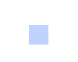

t_codeRendering
Show radiance and irradiance data as RGB images.
ISETBIO stores spectral power distributions of the radiance and irradiance images (and illuminants). The display rendering maps the spectral data into RGB using a simple principle
Convert the radiance/irradiance data to CIE XYZ values Convert the XYZ values to sRGB data appropriate for display
This tutorial shows these functions in action.
NOTES: sRGB coordinates are obtained from XYZ based on a "standard" model of typical monitor performance. Real monitors will deviate from the sRGB standard, and for real monitors you can do better if you use calibration data for that monitor. But this isn't illustrated here.
Copyright Imageval Consulting, LLC 2013
Contents
Initialize
ieInit;
Create a yellowsh blackbody spectrum
% Here is a simple vector of a yellowsh SPD wave = 400:10:700; % Specify the wavelength samples spd = blackbody(wave,3000); vcNewGraphWin; plot(wave,spd); xlabel('Wavelength (nm)'); ylabel('Energy (watts/sr/m2/nm)'); grid on;

C%%onvert the spd into an sRGB value
% We calculate the XYZ values from the spd XYZ = ieXYZFromEnergy(spd',wave); % We want the data to be in (row,col,wave) format XYZ = XW2RGBFormat(XYZ,1,1); % We then convert this to sRGB sRGB = xyz2srgb(XYZ); vcNewGraphWin; imagesc(sRGB) axis off; axis image
3D Format for images
% We treat represent images using a 3D format (row,col,channels) % RGB images have three channels. SPD images have more channels, equal to % the number of wavelength samples. % We convert a vector into the 3D format (which we call RGBFormat) as % follows. vcNewGraphWin; spd3D = XW2RGBFormat(spd(:)',1,1); % The spd3D has only one spatial point, which is hard to see. So, let's % make it bigger spd3D = imageIncreaseImageRGBSize(spd3D,40); imageSPD(spd3D,wave);
Here is a bluish blackbody radiator
spd = blackbody(wave,8000);
spd3D = XW2RGBFormat(spd',1,1);
% It is only one point, which is hard to see. So, let's make it bigger
spd3D = imageIncreaseImageRGBSize(spd3D,40);
imageSPD(spd3D,wave);
